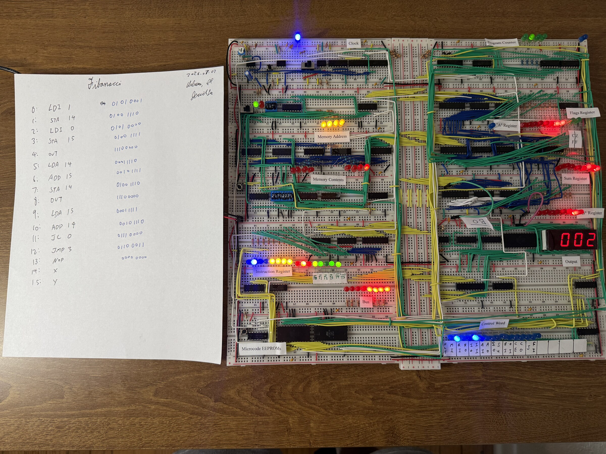

I built this 8-bit computer on breadboards following Ben Eater’s 8-bit computer project. The clock, registers, arithmetic circuitry, memory, and control logic are wired together as separate modules, with LEDs making the computer’s internal state visible.
8-bit CPU from Scratch


The labeled modules show the path from instructions to output: a program counter, memory address and contents, an instruction register, A and B registers, a sum register, and flags. Microcode EEPROMs and the control-word LEDs expose the control side, while a decimal display shows the output.